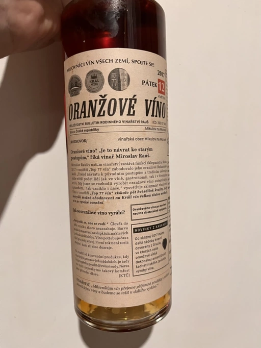

- Type
- White Still, Dry
- Producer
- Vinařství Rauš
- Vintage
- 2019
- Location
- Czech Republic, Moravské zemské víno
- Grapes
- Pinot Gris
- Alcohol
- 15.5
- Sugar
- NA
- Price
- XXX UAH
- Cellar
- N/A
Ratings
2022-12-18 - 7.00
I got this bottle as a surprise. Straight-forward and simple heavily macerated wine. Yet it’s well-made. Typical notes of dried apricot, pine nuts, dried summer field flowers, and hints of tea. Clean and not funky style. Tannin is green (stems are likely part of the story), and acidity is medium-low, so it lacks freshness. High alcohol (15.5 abv) is well integrated. Rustic wine to drink in a rustic environment (check). So I enjoyed it.